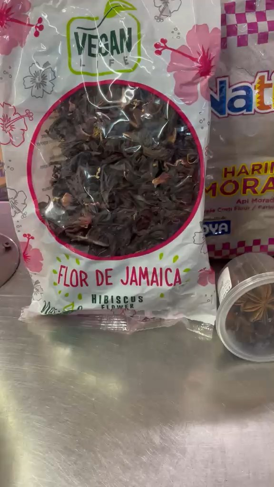

Tu colada morada empieza en Ruzafa
Maíz morado, harina morada, mortiño, mora, lulo, hierba luisa, cedrón, canela, clavo y pimienta de olor. Todo lo que lleva la colada morada del Día de los Difuntos, en un solo sitio en València.

Así se prepara la colada morada
Receta del chef Alejandro Salazar publicada por el diario ecuatoriano Primicias. Mira el vídeo y luego baja a la lista: lo tienes todo en nuestros puestos.
Vídeo de YouTube de Primicias (Ecuador). Se reproduce desde YouTube; no es nuestro.
Qué lleva la colada morada
Agrupado como se cocina: primero el color y la base, luego los aromas y por último las frutas.
🌽La base morada
- Maíz morado en grano En tienda
- Harina de maíz morado En tienda
- Flor de Jamaica (da color y acidez) En tienda
- Panela para endulzar En tienda
🌿Los aromas
- Canela en rama En tienda
- Clavo de olor En tienda
- Pimienta de olor (dulce) En tienda
- Hierba luisa En tienda
- Cedrón En tienda
- Anís estrella En tienda
- Ishpingo y hoja de naranja Opcional
🫐Las frutas
- Mortiño En tienda
- Mora (pulpa) En tienda
- Lulo / naranjilla En tienda
- Piña Fresca
- Babaco o frutilla Opcional
Cómo hacerla en casa (para 8 personas)
La versión de siempre, resumida. Cada familia tiene su toque: ajusta el dulce y la cantidad de fruta a tu gusto.
Te lo apartamos para el 2 de noviembre
Escríbenos por WhatsApp con tu lista y lo recoges en el Mercado de Ruzafa. Sin envíos a domicilio.
Lista de la compra
- Maíz morado
- Harina de maíz morado
- Flor de Jamaica
- Panela
- Canela en rama
- Clavo de olor
- Pimienta de olor
- Hierba luisa
- Cedrón
- Anís estrella
- Mortiño
- Pulpa de mora
- Lulo
Puestos 213-220 · Pasillo 1 ⭐ Principal
| Lunes a Sábado | 8:00 – 14:30 |
| Domingo | Cerrado |
Puestos 107-108
| Lunes a Viernes | 17:00 – 20:00 |
| Sábado y Domingo | Cerrado |
Mercado de Ruzafa · Carrer del Doctor Serrano, 5 · 46006 València. El 2 de noviembre de 2026 cae en lunes: haz la compra el fin de semana anterior.